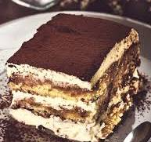

Torna alla Home
Tiramisù

Description
Il tiramisù è un dolce freddo a strati con savoiardi, caffè, crema al mascarpone e cacao amaro.
Ingredients
Savoiardi
Caffè
Mascarpone
Uova
Zucchero
Cacao amaro
Steps
Prepara la crema con uova, zucchero e mascarpone.
Immergi i savoiardi nel caffè.
Alterna strati di savoiardi e crema.
Spolvera con cacao e lascia raffreddare in frigo per almeno 3 ore.
 Torna alla Home
Torna alla Home